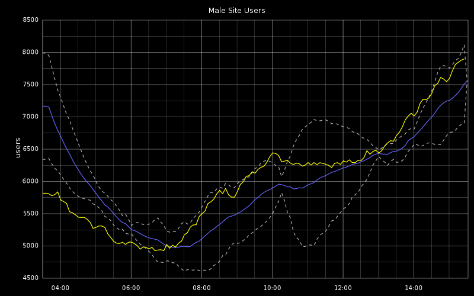

Ohai There
- I work at UN Food and Agriculture Organization on the http://data.fao.org project
- Creator and co-host of the Food Fight podcast
- You can reach me at bryan.berry@gmail.com or @bryanwb
- I am a novice at statistics, graphs, and monitoring

| z, ? | toggle help (this) |
| space, → | next slide |
| shift-space, ← | previous slide |
| d | toggle debug mode |
| ## <ret> | go to slide # |
| c, t | table of contents (vi) |
| f | toggle footer |
| r | reload slides |
| n | toggle notes |
| p | run preshow |
| P | toggle pause |


http://dummyatcooking.files.wordpress.com/2007/10/spaghetti-bolognese.jpg
largely based on discussion in foodfightshow episode 21


Just collecting the data isn't enough

http://www.buzzlol.com/wp-content/uploads/2012/05/Confused-Dog-Is-Confused.jpg
Gauges are the most commonly used metric type


http://blog.pkhamre.com/2012/07/24/understanding-statsd-and-graphite/

http://blog.pkhamre.com/2012/07/24/understanding-statsd-and-graphite/


That's horrible!
The average isn't all it's cracked up to be
Massage the Numbers to reveal the trend and to make useful forecasts

http://blog.pkhamre.com/2012/07/05/visualizing-logdata-with-logstash-statsd-and-graphite/
Let's Factor in:

Graph credit: Pal Kristian Hamre
http://blog.pkhamre.com/2012/07/05/visualizing-logdata-with-logstash-statsd-and-graphite/
http://www.itl.nist.gov/div898/handbook/pmc/section4/pmc435.htm

Graph credit: R.I. Pienaar
https://github.com/ripienaar/graphite-graph-dsl/wiki/Creating-Holt-Winters-Forecasts

Graph credit: R.I. Pienaar
Drop Unnecessary Grid lines

Ah, much better!

This presentation is available on github in showoff format (html,css,etc.), and diagrams done in SVG
Copyright 2012, Bryan W. Berry License: CC-By 3.0